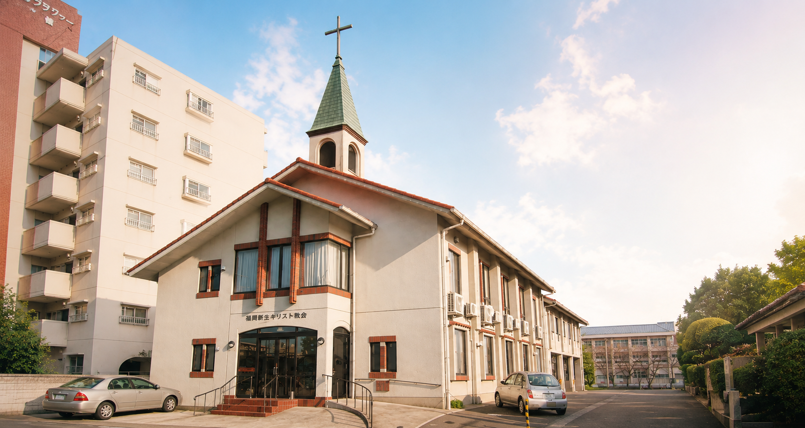
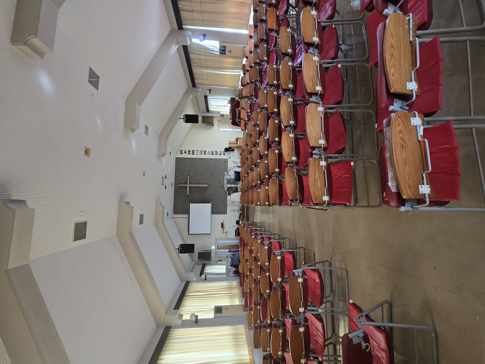
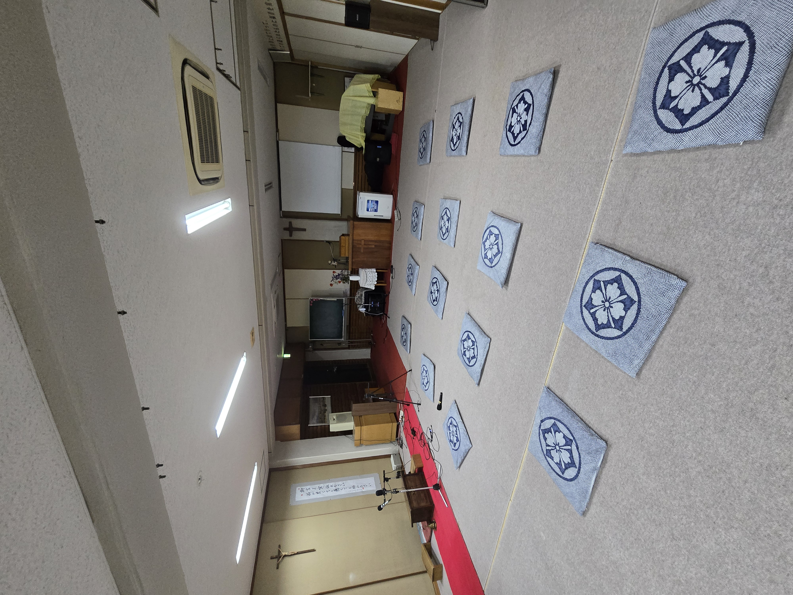
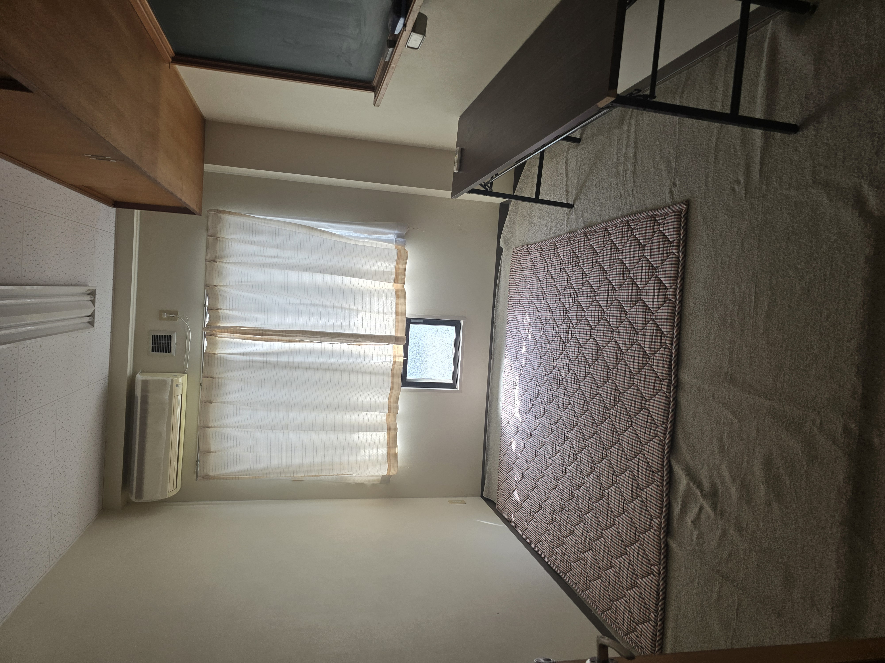

外観・駐車場
誰もが立ち寄りやすい、開かれた主の家
福岡都市高速「野多目」出口からすぐの好立地に位置し、地域に開かれた温かい外観でお迎えします。教会の敷地内には礼拝者専用の無料駐車場を完備しており、お車でお越しのご家族や、遠方からのご訪問者も安心してお越しいただけます。
💡 施設の特長
- 都市高速から車で約1分の好立地
- ゆったり停められる専用無料駐車場
- 初めての方でも分かりやすいエントランス
📋 ご利用案内
- 日曜日や集会の時間帯に自由にご利用可能です。
- 満車の場合は案内係が誘導いたします。

2階
150名収容の開放的な「大礼拝堂」
高い天井と、アーチ状の美しい構造が特徴的なメインの礼拝空間です。前方には神の愛の象徴である大きな十字架が掲げられ、大型スクリーンを用いた見やすい礼拝プログラムが進行されます。温かな自然光が両サイドから差し込み、心静かに御言葉に耳を傾け、賛美を捧げるのに最適な環境が整えられています。
💡 施設の特長
- 約150名を収容できる広々とした空間
- 賛美の響きが良い高い天井と音響設備
- 歌詞や聖書箇所が見やすい大型プロジェクター
📋 ご利用案内
- 主日礼拝、夕礼拝、各種合同集会で使用します。
- 礼拝前後は個人的な祈りの黙想時間としてお使いいただけます。

1階
主と深く交わる「防音祈祷室」
「祈りは命を懸けてするものだ」という信仰の遺産を受け継ぎ、床一面にカーペットが敷かれた本格的な祈りの部屋です。座布団にひざまずき、周囲の目を気にすることなく、神様に涙と感謝を注ぎ出して祈れるよう、厚い扉と二重窓で防音処理が施されています。講壇と十字架に向かって、毎日途切れることなく熱い祈りが捧げられています。
💡 施設の特長
- 周囲を気にせず大声で祈れる防音設備
- ひざまずいて祈りやすい全面カーペットと座布団
- 床下には洗礼（バプテスマ）用の洗礼槽を完備
📋 ご利用案内
- 毎朝の早天祈祷会、水・金曜祈祷会で使用します。
- 個人的な祈りのために、いつでも自由に入室・利用可能です。

2階 礼拝堂後方
温かな交わりと憩いの「ゲストルーム・親睦室」
大礼拝堂の後方には、用途に合わせて使用できる複数の個室とオープンスペースが用意されています。クッションマットが敷かれたお部屋は、小さなお子様連れのご家族がくつろいだり、各部署のグループ（Church Fellowship Day）が親睦を深める交わりの場として最適です。また、ベッドや冷蔵庫、デスクを備えたプライベートなゲストルームもあり、遠方から来られた宣教師や奉仕者が静かに休息をとれるよう配慮されています。
💡 施設の特長
- お子様が安全に遊べるクッションマットルーム
- グループでの食事や分かち合いができる多目的空間
- 宣教師・講師が宿泊できる生活設備完備の個室
📋 ご利用案内
- 礼拝中の母子室や、礼拝後の昼食・親睦の場として利用可能です。
- ゲストルームの宿泊・使用をご希望の際は、事前に牧師までご相談ください。